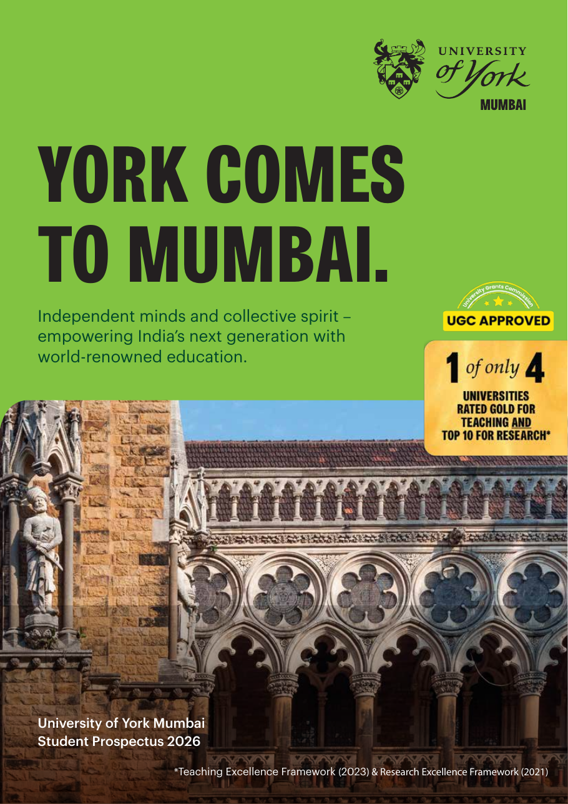

Same York degree
A UK-developed curriculum taught to York's international academic standards.
University of York Mumbai
Study a UK-developed curriculum with the same academic standards as York's home campus, supported by Mumbai's industry ecosystem and opportunities to experience York in the UK.

The York advantage
University of York Mumbai brings York's research-intensive education to India. Students earn a University of York degree with the same curriculum quality, rigour and academic standards as the UK campus.
A UK-developed curriculum taught to York's international academic standards.
A dedicated Research Office connects Mumbai students with York's global research ecosystem.
Live projects, internships, guest lectures, hackathons and mentoring build workplace readiness.
Structured routes include undergraduate transfer and exchange options, plus a postgraduate York residency.
Programmes
Six three-year undergraduate degrees and three one-year postgraduate degrees combine academic depth with applied projects and career experience.
Business learning applied through live projects and industry exposure.
Analytical economics focused on ideas, evidence and impact.
Computing, programming and system design fundamentals.
Machine learning and data-driven systems with hands-on builds.
Applied cyber defence through labs and industry scenarios.
Management and creative thinking for media, design and culture.
Practical AI experience and collaboration with York peers.
Finance study in India's financial capital with local internship exposure.
Leadership, strategy and innovation strengthened by applied projects.
Eligibility
Requirements below are from the 2026 prospectus. Admissions Edu can review your subjects, grades and English qualification before you apply.
Fees and funding
Domestic fees apply to Indian nationals residing in India at the time of application. Tuition may increase by up to 5% in subsequent academic years.
| Programme | Domestic students | International students |
|---|---|---|
| All undergraduate programmes | ₹12,50,000 | ₹14,00,000 |
| MSc Artificial Intelligence | ₹16,50,000 | ₹18,50,000 |
| MSc Management | ₹15,00,000 | ₹17,00,000 |
| MSc Finance | ₹16,00,000 | ₹18,00,000 |
For 2026/27, awards are available across all undergraduate and postgraduate programmes following a holistic assessment.
The prospectus lists collateral-free education loans and extended repayment support.
Careers and mobility
Career Services begins from the start with skills discovery, CV and LinkedIn development, mentoring, mock interviews, live projects, assessments and placement preparation.
A six-week Social Impact Internship alongside early career discovery and campus involvement.
An eight-week internship plus workplace workshops, leadership talks and mock interviews.
A 12-week Corporate Internship with support towards internship-to-PPO conversion.
A four-week York Mumbai internship through social impact, start-up or global corporate routes.
Global connections
Campus and student life
Modern teaching spaces, online resources, research connections and structured student engagement support academic and personal development.
Digitally equipped classrooms, project spaces, quiet and group study areas, digital libraries and approved York online systems.
Student-led clubs, sports, performing arts, peer mentoring, competitions and shared initiatives with York's UK community.
Faculty conversations, innovation labs, mentoring, guest lectures, live projects, hackathons and networking.
Ashok Deluxe Apartments in Marol is approximately 4.1 km from One Boulevard, with an estimated journey of 16-20 minutes.
Admissions
Applications are assessed competitively. Meeting the minimum requirement does not guarantee an interview or admission.
Undergraduate applicants are reviewed using Class X and XI performance; postgraduate applicants are assessed using their undergraduate record.
York may consider statements, references, extracurricular achievements and relevant test results.
Shortlisted applicants may be interviewed for communication, motivation, resilience, aspirations and alignment with the university.
The prospectus states that the ₹2,000 application fee is non-refundable. Tuition refund levels are 100% (less permitted processing fees) at least 15 days before the notified admission deadline, 90% within 15 days before, 80% within 15 days after, 50% between 16 and 30 days after, and no refund after 30 days. Eligible refunds are processed within 15 working days after a complete withdrawal request.
The ₹50,000 admission fee is described as refundable on cancellation. The ₹50,000 security deposit is refundable at graduation or withdrawal, subject to clearance of dues, return of university property and exit formalities.
University of York Mumbai
Speak with Admissions Edu about programmes, eligibility, fees and your next application step.